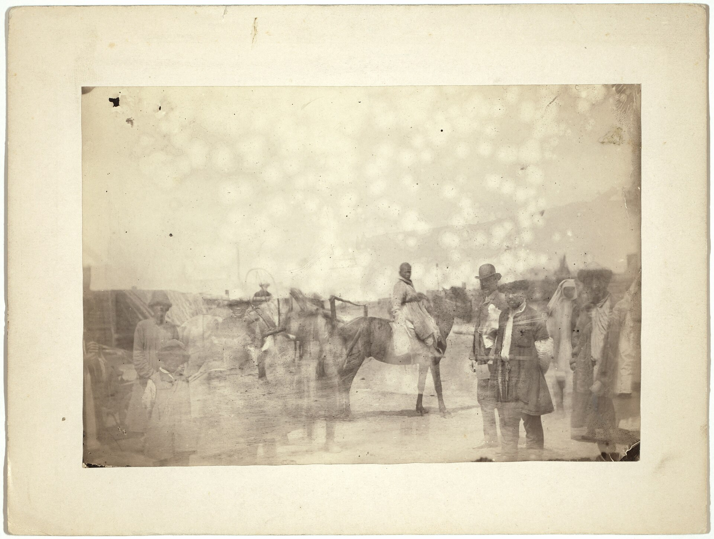
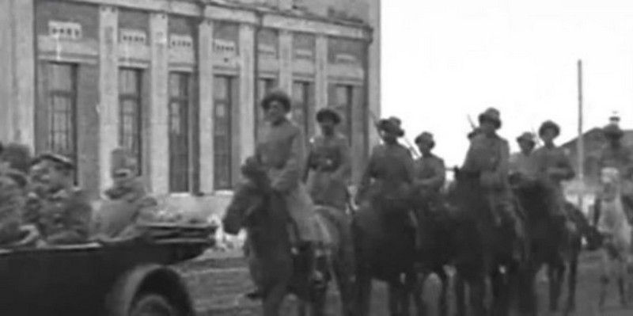
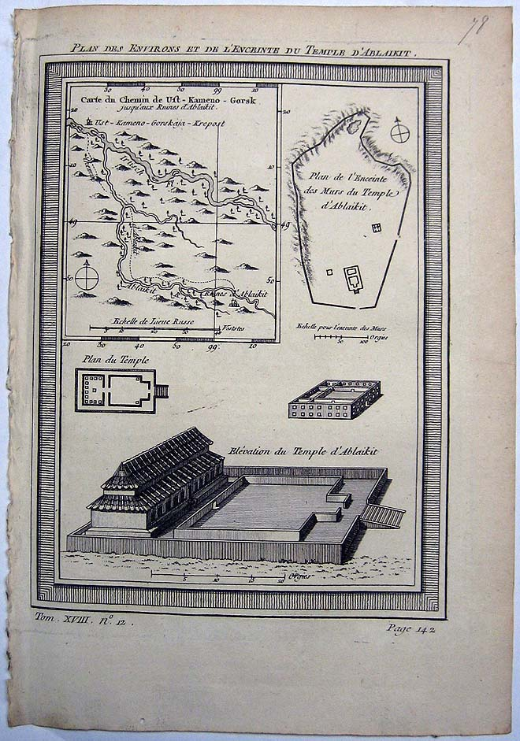
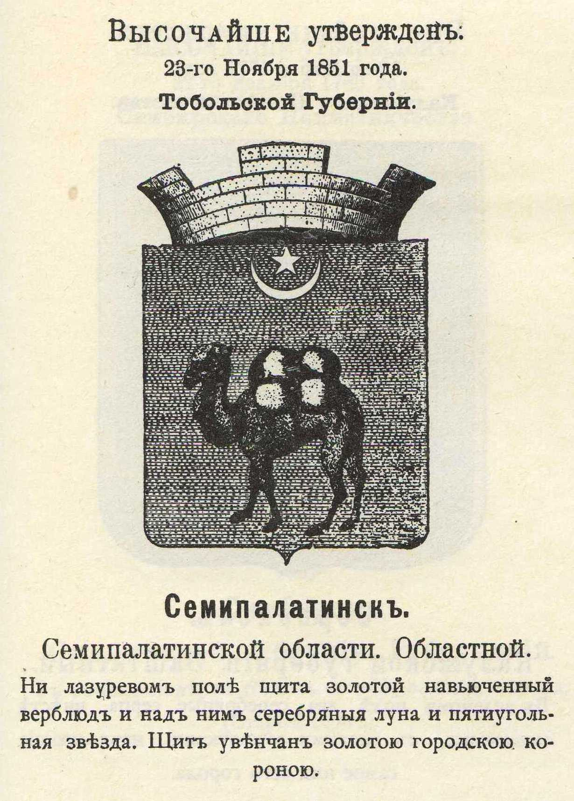

Город на Иртыше: Семипалатинск XIX века
Восемь фотографий, рисунков и документов о том, как город на правом берегу Иртыша жил рекой, базаром и степью вокруг. Каждый экспонат связан с делом в фонде ГАВКО.
Открыта 21 сентября 2026
Река, которая кормит город
В 1718 году у Иртыша поставили крепость, а к середине XIX века вокруг неё вырос торговый город. Переправа была его главной улицей: паром связывал левый берег со степным правобережьем, по нему шли караваны, почта и скот.

Базар и аул
Торговля связывала город и кочевые аулы. На снимках 1885 года видны юрты, караванные верблюды и мена на базарной площади. Они хранятся рядом с административными документами, которые показывают тот же мир глазами чиновника: обзоры области и статистику переписей.
Все выставки
 Выставка
ВыставкаГород на Иртыше: Семипалатинск XIX века
Открыта

ВыставкаАул под Семипалатинском
Открыта
 Документы
ДокументыОбзор Семипалатинской области за 1893 год
Открыта

ВыставкаАлаш-милиция в Семипалатинске, 1919
Открыта

Карты и планыПлан Аблайкитского монастыря близ Семипалатинска
Открыта

ВыставкаСемипалатинск в рисунках 1850-х
Открыта